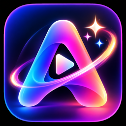

ARreeloo
Support
We are happy to help
Need help, found a problem or have an idea? Email us and we will reply, usually within two days.
Common questions
How do I remove the watermark?
- Open a finished video and tap Save or Share.
- Tap Remove watermark and pay once. It is not a subscription.
- From then on, every video is saved without the ARreeloo mark and closing card.
I bought it before. How do I get it back on a new phone?
Sign in with the same Apple Account, open the menu in ARreeloo and tap Restore purchase. You will not be charged again.
Why are captions offered in only some languages?
Captions are written by your phone's own speech recognition, and the list shows only the languages it supports. Pick the language you will speak under Caption language. Some languages work without the internet; others need it.
My captions came out wrong. What can I do?
Speak clearly and close to the phone, and check the caption language matches the one you spoke. You can fix any word with Edit captions.
Where are my videos saved?
Every video you make is kept in My videos inside the app, on your phone. Tap Save to put a copy in your Photos library. Nothing is uploaded anywhere.
The app can't use my camera, microphone or photos.
Open the Settings app, scroll to ARreeloo and turn on Camera, Microphone, Photos or Speech Recognition.
How do I learn all the features?
Open the menu in ARreeloo and tap How to use. Every feature is explained step by step, and you can see the welcome tour again.
Reporting a problem
It helps us fix it faster if your email says:
- your iPhone or iPad model and iOS version
- the ARreeloo version, shown at the bottom of the menu
- what you did, and what happened
- a screenshot or screen recording, if you can
Privacy
ARreeloo does its work on your device and collects nothing. Read the full Privacy Policy.